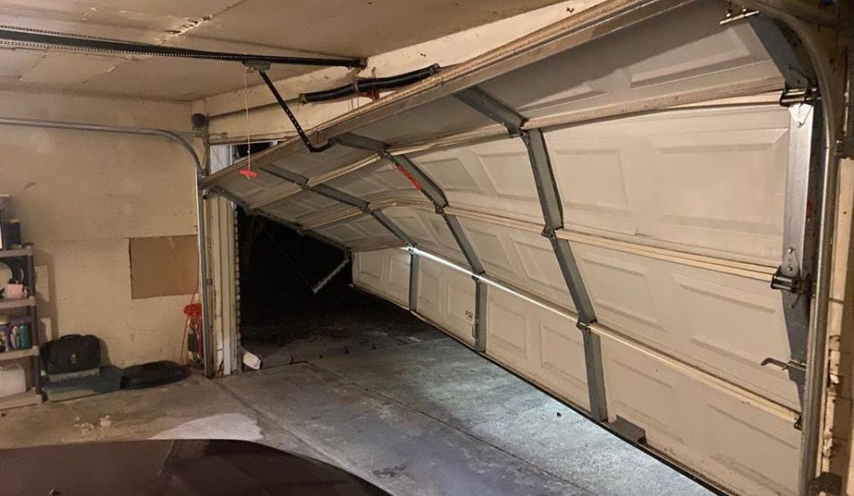
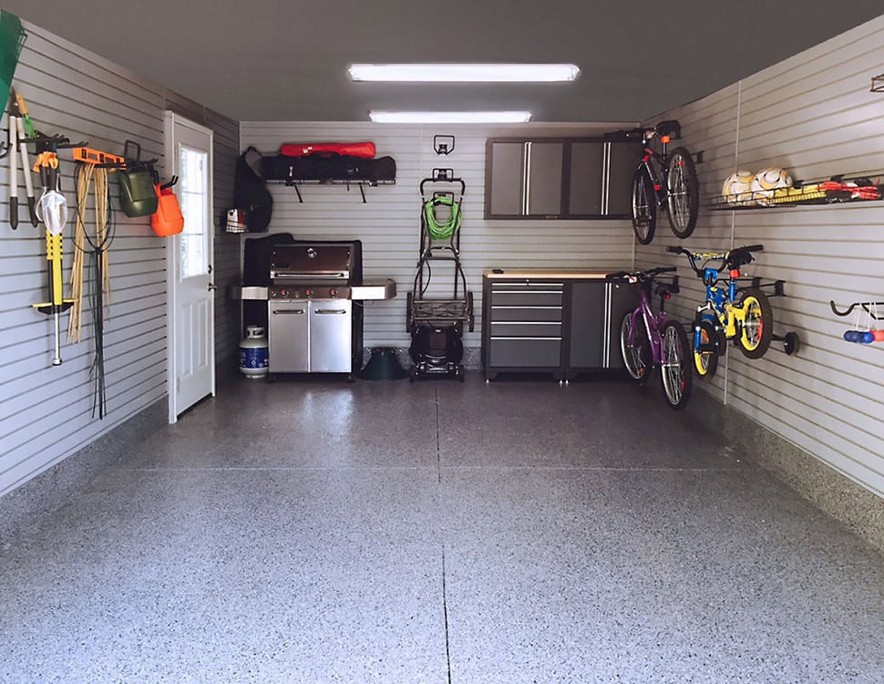

Revitalizing a Landmark: The Grand Avenue Garage, LIC
The Challenge:
This historic parking structure suffered from extensive concrete spalling, rebar corrosion, and failing waterproofing, compromising its structural integrity and user safety.
Our Solution:
LCS implemented a multi-faceted restoration plan including comprehensive concrete repairs, installation of a new high-performance traffic coating system, and upgrades to expansion joints. Advanced cathodic protection was used in targeted areas.
Key Highlights:
- Over 5,000 sq ft of concrete repaired.
- New elastomeric waterproofing membrane applied.
- Project completed ahead of schedule and under budget.